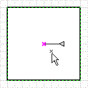
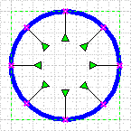
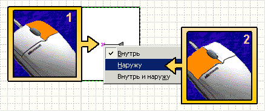
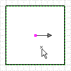
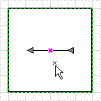
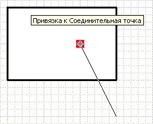
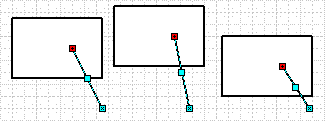
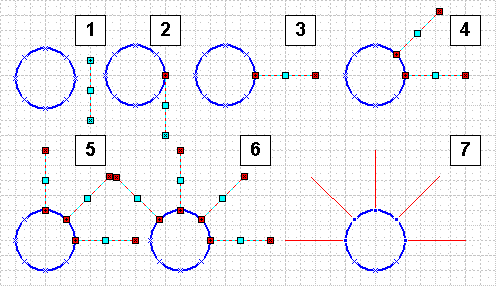
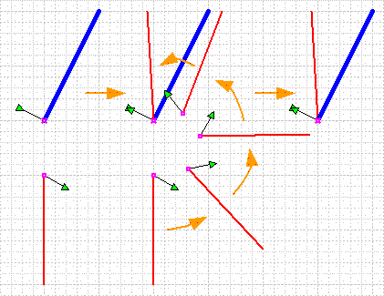
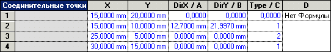

Типы соединительных точек в Visio 2000 Ru и Visio 2002 Ru.
 В процессе черчения диаграмм часто возникает необходимость показать связи элементов диаграммы и возникает ситуация когда все уже почти закончено, все элементы выровнены и приглажены, как сразу вспомнится, что один элемент все же пропущен и придется подвинуть элементы и впихнув новый, все заново центровать, ровнять и т.д. Или, к примеру, при разработке схем необходимы пояснения в схеме к каждому выводу. Рассмотрим работу соединительных точек и связей между ними.
В процессе черчения диаграмм часто возникает необходимость показать связи элементов диаграммы и возникает ситуация когда все уже почти закончено, все элементы выровнены и приглажены, как сразу вспомнится, что один элемент все же пропущен и придется подвинуть элементы и впихнув новый, все заново центровать, ровнять и т.д. Или, к примеру, при разработке схем необходимы пояснения в схеме к каждому выводу. Рассмотрим работу соединительных точек и связей между ними.
Соединительная точка.
Соединительные точки бывают 3-х разных типов.
Тип первый. Внутренняя точка. Это тип соединительных точек создается по умолчанию, т.е. если выбрать инструмент “Соединительная точка” и выбрать фигуру, то зажав Ctrl увидим, что у курсора появился крестик. Теперь в любом месте фигуры, нажав левую кнопку мыши, добавим соединительную точку.

На самом деле соединительная точка может лежать и за пределами фигуры, просто начертили ее в контуре для простоты определения, чтобы знать какой фигуре, какая точка принадлежит. На фигуре появился синий крестик. Это и есть соединительная точка. Если ее выделить, то увидим, что от этой точки отходит линия, которая оканчивается серым треугольником. Это значит, что пока угол, под которым эта точка будет производить соединение, равен 0. Если треугольник зеленый, то это значит, что точка была начерчена на линии фигуры, и в этом случае треугольник почти всегда направлен внутрь фигуры.

Тип второй. Внешняя точка. Чтобы получить этот тип соединительной точки, необходимо начертить внутреннюю точку, выделить ее и нажать правой кнопкой мыши. В открывшемся меню выбрать Наружу.

Теперь это внешняя точка и она стала отображаться точкой. Если ее выделить, то увидим, что от этой точки отходит линия, которая оканчивается серым треугольником, напоминая стрелку.

Тип третий. Комбинированная точка. Чтобы получить этот тип соединительной точки, необходимо либо начертить внутреннюю точку, либо внешнюю, выделить ее и нажать правой кнопкой мыши. В открывшемся меню выбрать Внутрь и наружу. Теперь это комбинированная точка и она стала отображаться крестиком с точкой по центру. Если ее выделить, то увидим, что от этой точки отходит уже 2 линии, которые оканчиваются серыми треугольниками, напоминая стрелу.

Связи точек.
Тип первый. Простая связь. Если начертить линию и закончить ее на соединительной точке, то она будет в этот момент подсвечена красным прямоугольником.

Теперь при перемещении фигуры, одна точка будет находиться на одном месте, а другая перемещаться вместе с фигурой. Но при этом длина фигуры тоже будет изменяться. Если же выделить линию, то будет видно, что один маркер фигуры стал красным, т.е. зависимым, от положения соединительной точки.

Тип второй. Жесткая связь. Если начертить линию в произвольном месте и начертить на ней внешнюю соединительную точку, то при присоединении оба маркера станут красными, т.е. теперь положение все линии зависит от положения соединительной точки.

Тоже самое можно сделать и с другими фигурами. Таким образом, положение меняется, а размер нет. Можно провести аналогию с объединение в группу, но при изменении размера “главной” фигуры, остальные не изменяют свой размер, только положение. Также здесь имеет значение положения зеленых прямоугольников у соединительных точек всех видов. Взаимное расположение этих треугольников и будет определять конечное положение фигуры таким образом, чтобы они совпали.

ТаблицаФигур.
Теперь рассмотрим раздел Соединительные точки.

Этот раздел очень похож на раздел Геометрия. В нем также есть ячейки X, Y, A, B, C, D.
- В ячейке X содержится X- координата соединительной точки в локальных координатах.
- В ячейке Y содержится Y- координата соединительной точки в локальных координатах.
- В ячейке A содержится X-координата направления зеленого треугольника, также в локальных координатах.
- В ячейке B содержится Y-координата направления зеленого треугольника, также в локальных координатах.
- В ячейке C содержится тип соединительной точки. 0-это первый тип, 1-это второй тип, 2- это третий тип соединительной точки.
- В ячейке D могут содержаться вычисления, формулы и т.д. По умолчанию, эта ячейка недоступна и для этого необходимо нажать на строке правой кнопкой мыши и выбрать “Изменить тип строки…”
В начало раздела
Предыдущая статья
Следующая статья
Автор: Ничков Алексей (Digitall)